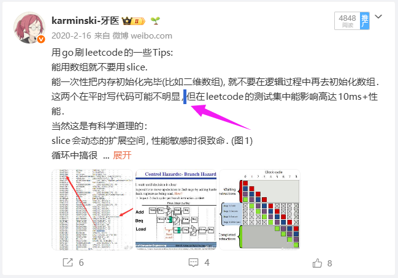

hsn今天吃什么
@hsn8086k
说是我习惯也这样. 曾经希望 llm 简单修改文段, llm 把半角符号全替换成了全角符号, 无论如何命令 llm 改成半角 + 空格都改不了, 给我气坏了!

karminski-牙医
@karminski3
奉劝各位空口鉴AI的谨慎, 踢到我这块铁板了吧? 我留了一手, 你选中我的原文, 注意看我的逗号和句号都是英文标点, 然后手动在标点后面加的空格. 这是我这么多年的个人习惯. 没有模型输出中文用英文标点吧? https://t.co/6QUHQrhwRP https://t.co/TAWZmlYhb3